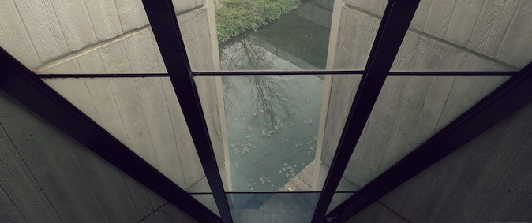

Welcome
Robyn Boyd is arguably the most influential architect there has been in Australia. Through his writings, Boyd inspired the general community and through his architecture, he has become an acknowledged leader in the design and architectural professions. He was a renowned Victorian architect, author, critic, and public educator in the 50s and 60s, a leader in Melbourne’s Modern Architecture movement, a visionary in urban design, and outspoken on the ‘Australian Identity’.
There are a number of residential buildings designed by Robyn Boyd in Canberra, including Clark House (Links to an external site.)and Fenner House (Links to an external site.). Alongside these, there are a few brilliant commercial buildings, one of which will be the focus of this website. This website is being developed to increase public awareness about the significance of Robin Boyd’s Churchill House (formerly Open-Systems House), in Canberra. In 2019, the Robin Boyd Foundation celebrated the 100th anniversary of the influential architects birth.
About 